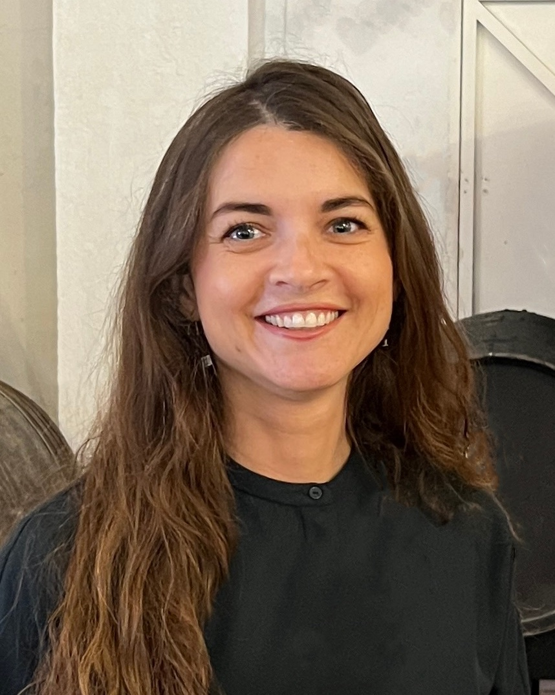

I lead design for APplus ERP at Asseco Solutions, a platform for mid-sized manufacturers across Germany, Austria and Switzerland, and I own the design system it runs on as a released package, not a Figma file. With two senior designers I designed four of its products from zero: Elly, the Best Practice Hub, Documents and Analytics. APplus won Gold in the User Experience category of ERP-System des Jahres in 2025 and again in 2026. Ten years in data-dense, regulated software before that: ERP, insurance and healthcare, legal, industrial energy.
The product model. The navigation, content and interaction model every APplus module follows, desktop and mobile, and the information architecture of each new application.
The design system, as code. FOX: tokens and component APIs authored in Figma, implemented in Angular, React and web components, documented in Storybook, tested in Chromatic, published to Nexus for six product teams. I author and merge component pull requests myself.
The team. Two senior product designers; work split by application, reviewed in a weekly critique.
Sign-off, and the work after handoff. Design acceptance is in the definition of done. I review pull requests against the frames, run design QA on the build, and reconcile the file to the code. Where a flow is easier to show than describe, I hand over a working prototype with the Figma file, and I design components in code.
The research rhythm. Quarterly interviews, journey mapping, usability testing every release, run by me.
Own product design for a multi-module ERP used across DACH on desktop and mobile. Lead two senior product designers. Own the FOX design system.